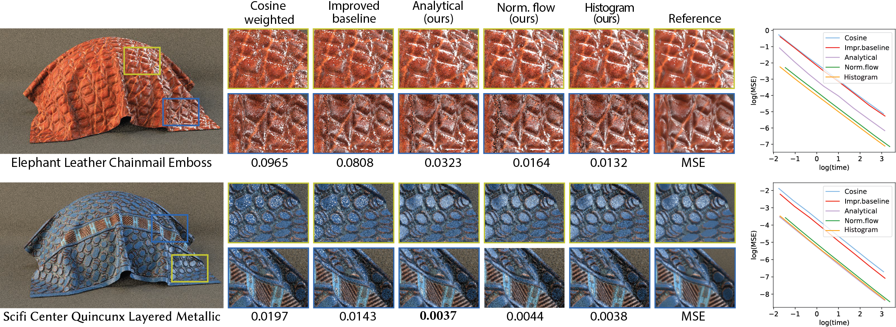

Neural material representations have recently been proposed to augment the material appearance toolbox used in realistic rendering. These models are successful at tasks ranging from measured BTF compression, through efficient rendering of synthetic displaced materials with occlusions, to BSDF layering. However, importance sampling has been an after-thought in most neural material approaches, and has been handled by inefficient cosine-hemisphere sampling or mixing it with an additional simple analytic lobe. In this paper we fill that gap, by evaluating and comparing various pdf-learning approaches for sampling spatially varying neural materials, and proposing new variations of these approaches. We investigate three sampling approaches: analytic-lobe mixtures, normalizing flows, and histogram prediction. Within each type, we introduce improvements beyond previous work, and we extensively evaluate and compare these approaches in terms of sampling rate, wall-clock time, and final visual quality. Our versions of normalizing flows and histogram mixtures perform well and can be used in practical rendering systems, potentially facilitating the broader adoption of neural material models in production.
@article{Xu:2023:NeuSample,
author = {Bing Xu and Liwen Wu and Milo\v{s} Ha\v{s}an and Fujun Luan and Iliyan Georgiev and Zexiang Xu and Ravi Ramamoorthi},
title = {NeuSample: Importance Sampling for Neural Materials},
journal = {ACM Transactions on Graphics (Proceedings of SIGGRAPH)},
year = {2023},
volume = {42},
number = {4}
}